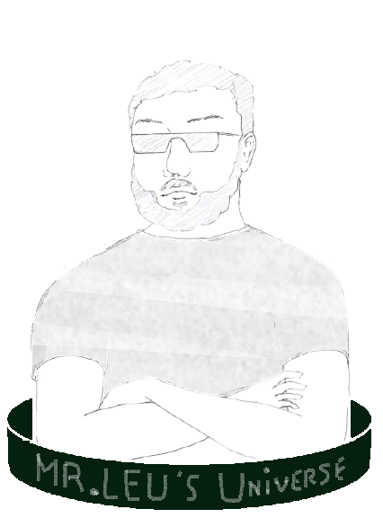

Ce site répertorie tous les chapitres de NSI (Numérique et Sciences Informatiques) et leur apporte des illustrations ainsi que des ressources annexes. Ils proviennent de l'enseignement apporté par Mister Loïc Leu, professeur de NSI au lycée Albert Einstein. Ce site web est le résultat d'un projet concernant la réalisation d'un site web.
Coucou